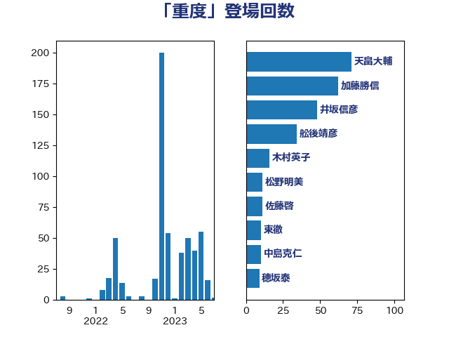

単語「重度」

| 中島克仁 | 立憲民主党 | 16 回 |
| 舩後靖彦 | れいわ新選組 | 13 回 |
| 田村憲久 | 自由民主党 | 12 回 |
| 木村英子 | れいわ新選組 | 11 回 |
| 塩村あやか | 立憲民主党 | 9 回 |
| 山本博司 | 公明党 | 8 回 |
| 田村智子 | 日本共産党 | 6 回 |
| 赤羽一嘉 | 公明党 | 6 回 |
| 村井英樹 | 自由民主党 | 5 回 |
| 塩崎彰久 | 自由民主党 | 4 回 |
| 武田良太 | 自由民主党 | 4 回 |
| 今井絵理子 | 自由民主党 | 3 回 |
| 天畠大輔 | れいわ新選組 | 3 回 |
| 後藤茂之 | 自由民主党 | 3 回 |
| 秋野公造 | 公明党 | 3 回 |
| 井上哲士 | 日本共産党 | 2 回 |
| 佐藤英道 | 公明党 | 2 回 |
| 佐藤茂樹 | 公明党 | 2 回 |
| 吉田統彦 | 立憲民主党 | 2 回 |
| 国光あやの | 自由民主党 | 2 回 |
| 塩川鉄也 | 日本共産党 | 2 回 |
| 大野泰正 | 自由民主党 | 2 回 |
| 斉藤鉄夫 | 公明党 | 2 回 |
| 菅義偉 | 自由民主党 | 2 回 |
| 西村康稔 | 自由民主党 | 2 回 |
| 野中厚 | 自由民主党 | 2 回 |
| 金城泰邦 | 公明党 | 2 回 |
| 阿部知子 | 立憲民主党 | 2 回 |
| 一谷勇一郎 | 日本維新の会 | 1 回 |
| 仁木博文 | 無所属 | 1 回 |
| 伊藤岳 | 日本共産党 | 1 回 |
| 倉林明子 | 日本共産党 | 1 回 |
| 和田政宗 | 自由民主党 | 1 回 |
| 坂本哲志 | 自由民主党 | 1 回 |
| 塩田博昭 | 公明党 | 1 回 |
| 宮口治子 | 立憲民主党 | 1 回 |
| 宮本徹 | 日本共産党 | 1 回 |
| 尾崎正直 | 自由民主党 | 1 回 |
| 山下雄平 | 自由民主党 | 1 回 |
| 山井和則 | 立憲民主党 | 1 回 |
| 打越さく良 | 立憲民主党 | 1 回 |
| 本村伸子 | 日本共産党 | 1 回 |
| 柳ヶ瀬裕文 | 日本維新の会 | 1 回 |
| 柿沢未途 | 無所属 | 1 回 |
| 梅村聡 | 日本維新の会 | 1 回 |
| 浜口誠 | 国民民主党 | 1 回 |
| 海江田万里 | 立憲民主党 | 1 回 |
| 田中健 | 国民民主党 | 1 回 |
| 田名部匡代 | 立憲民主党 | 1 回 |
| 田村まみ | 国民民主党 | 1 回 |
| 石田昌宏 | 自由民主党 | 1 回 |
| 磯崎仁彦 | 自由民主党 | 1 回 |
| 福山哲郎 | 立憲民主党 | 1 回 |
| 福島みずほ | 社会民主党 | 1 回 |
| 竹内真二 | 公明党 | 1 回 |
| 篠原孝 | 立憲民主党 | 1 回 |
| 自見はなこ | 自由民主党 | 1 回 |
| 西銘恒三郎 | 自由民主党 | 1 回 |
| 赤澤亮正 | 自由民主党 | 1 回 |
| 野田聖子 | 自由民主党 | 1 回 |
| 金村龍那 | 日本維新の会 | 1 回 |
| 長峯誠 | 自由民主党 | 1 回 |
| 長浜博行 | 無所属 | 1 回 |
| 音喜多駿 | 日本維新の会 | 1 回 |
| 高木かおり | 日本維新の会 | 1 回 |
| 高橋光男 | 公明党 | 1 回 |
| 高橋千鶴子 | 日本共産党 | 1 回 |